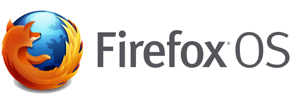

Android
Android es un sistema operativo basado en el núcleo Linux. Fue diseñado principalmente para dispositivos móviles con pantalla táctil, como teléfonos inteligentes o tablets; y también para relojes inteligentes, televisores y automóviles. Inicialmente fue desarrollado por Android Inc., empresa que Google respaldo económicamente y más tarde, en 2005, compró. Android fue presentado en 2007 junto la fundación del Open Handset Alliance (un consorcio de compañías de hardware, software y telecomunicaciones) para avanzar en los estándares abiertos de los dispositivos móviles

Seguir leyendo:
http://es.wikipedia.org/wiki/Android
iOS (Apple)
iOS es un sistema operativo móvil de la multinacional Apple Inc. Originalmente desarrollado para el iPhone (iPhone OS), después se ha usado en dispositivos como el iPod touch y el iPad. No permite la instalación de iOS en hardware de terceros. Tenía el 26% de cuota de mercado de sistemas operativos móviles vendidos en el último cuatrimestre de 2010, detrás de Google Android y Nokia.

Seguir leyendo:
http://es.wikipedia.org/wiki/IOS
Windows Phone
Windows Phone (abreviado WP) es un sistema operativo móvil desarrollado por Microsoft, como sucesor de Windows Mobile. A diferencia de su predecesor está enfocado en el mercado de consumo en lugar de en el mercado empresarial. Con Windows Phone; Microsoft ofrece una nueva interfaz de usuario que integra varios de sus servicios propios como OneDrive, Skype y Xbox Live en el sistema operativo. Compite directamente contra Android de Google e iOS de Apple. Su última versión disponible y definitiva es Windows Phone 8.1, lanzado el 14 de abril de 2014.

Seguir leyendo:
http://es.wikipedia.org/wiki/Windows_Phone
Firefox OS
Firefox OS (nombre clave: Boot to Gecko o B2G) es un sistema operativo móvil, basado en HTML5 con núcleo Linux, de código abierto (a diferencia de Android, específicamente la tienda de aplicaciones) para varias plataformas. Es desarrollado por Mozilla Corporation bajo el apoyo de otras empresas7 y una gran comunidad de voluntarios de todo el mundo. El sistema operativo está diseñado para permitir a las aplicaciones HTML5 comunicarse directamente con el hardware del dispositivo usando JavaScript y Open Web APIs.
Seguir leyendo:
http://es.wikipedia.org/wiki/Firefox_OS